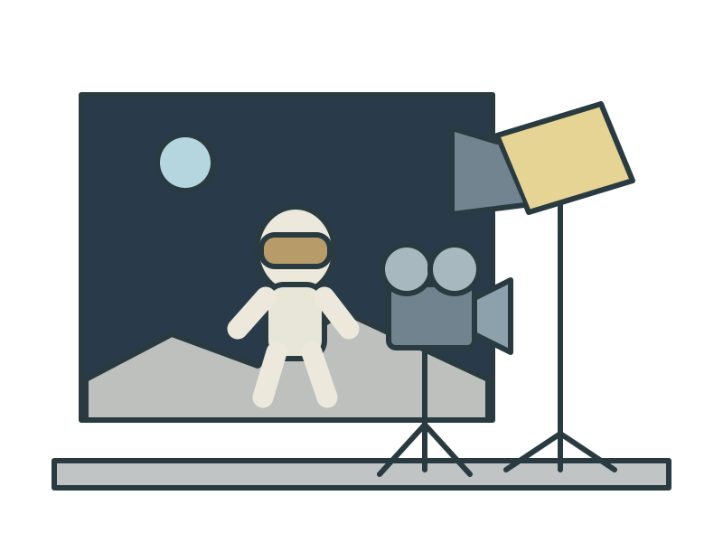
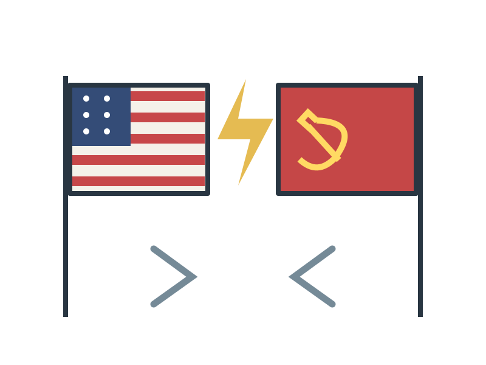
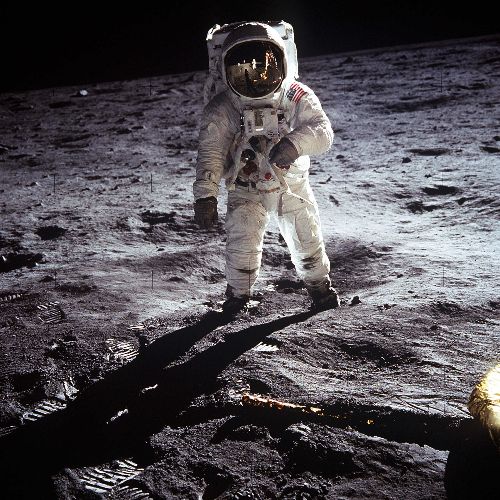
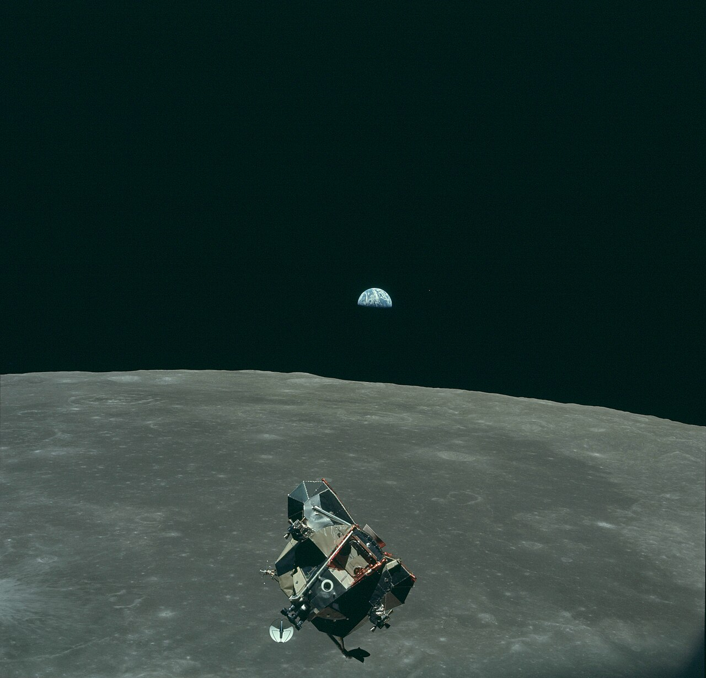
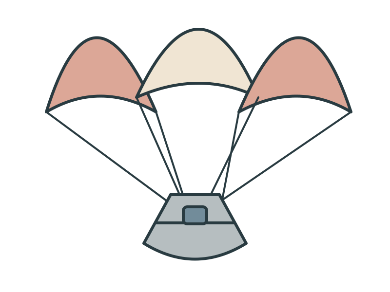
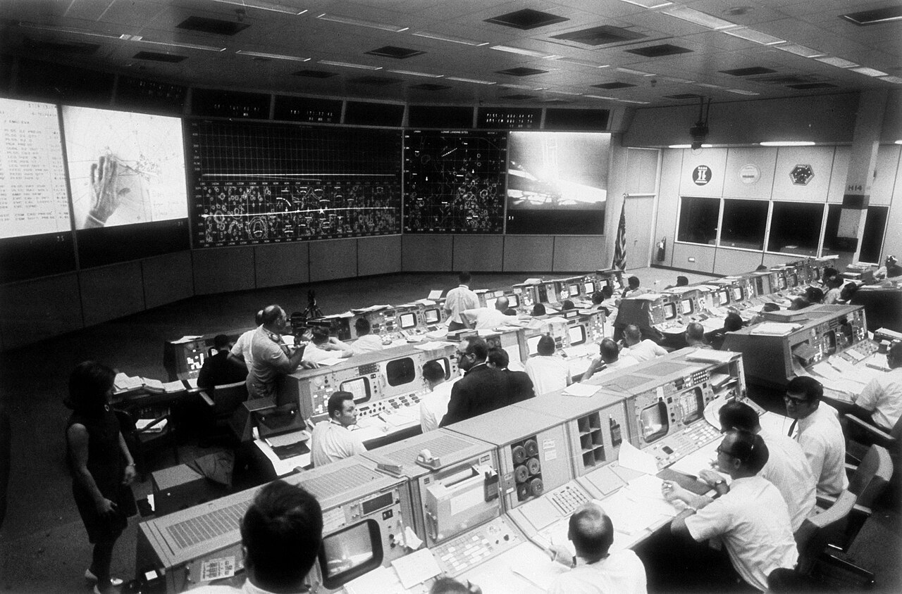
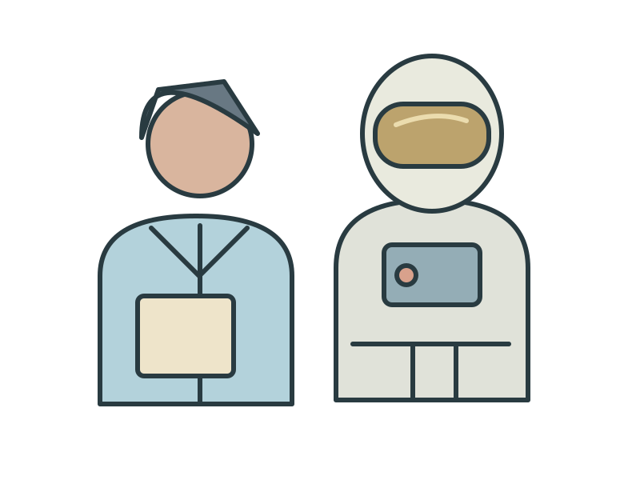
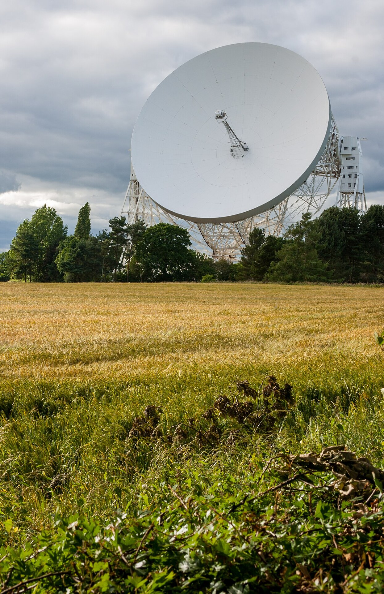
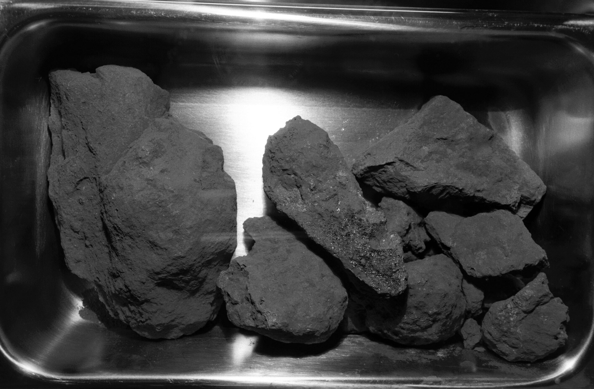
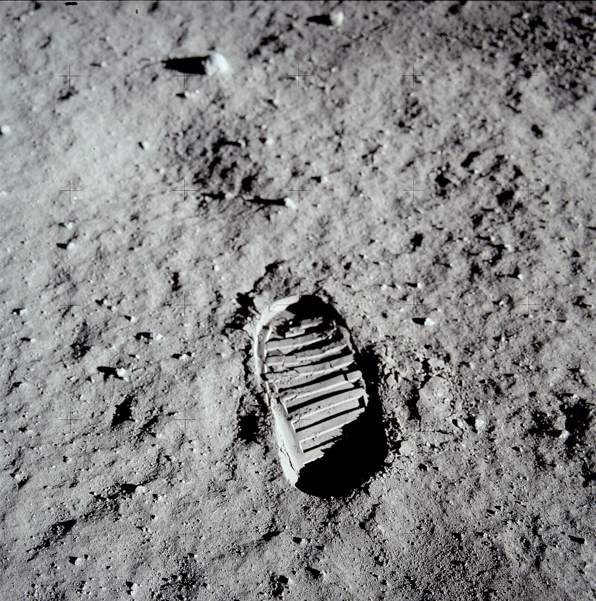

FILMADO NA TERRA?
ALEGAÇÃO


A missão histórica
NASA / NARA • Apollo 11 • 1969
A teoria questiona o pouso

Uma encenação? (segundo a teoria)
Filmado aqui na Terra?
A corrida espacial
NASA • Public domain

Estados Unidos × União Soviética
As fotos passam a ser questionadas
A desconfiança ganhou atenção

Detalhes passaram a ser questionados
NASA • Apollo 11 • 1969
A bandeira parecia se mexer...
Montagem de fotos NASA • Anynobody
Estrelas fracas não aparecem na fotografia
“Cadê as estrelas?”
E essas sombras?
Mídia...
Interface ilustrativa
...e internet
NAVEGAÇÃO
APOLLO
Era suficiente para ir e voltar?
A tecnologia seria suficiente?

Levar pessoas à Lua...
NASA / Apollo 11 • Public domain

...e trazê-las de volta
DÉCADAS DE SEGREDO?
Um acobertamento por décadas?
Apollo 11 • filmagem NASA
National Aeronautics and Space Administration • Public domain
As evidências são enormes

Engenheiros e cientistas
NASA Johnson Space Center / NA • Public domain

Astronautas

Estações independentes
Jodrell Bank • Mike Peel • CC BY-SA 4.0
Sinais acompanhados em tempo real
Acompanhamento em tempo real

Rochas lunares estudadas em vários países
NASA • amostras Apollo 11
Imagens orbitais posteriores
NASA / LRO • imagem orbital com destaques

Locais de pouso confirmados
NASA / Buzz Aldrin • Public domain